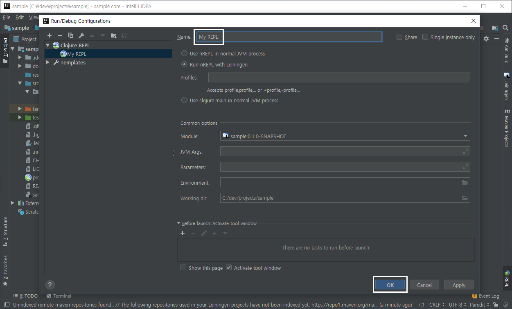
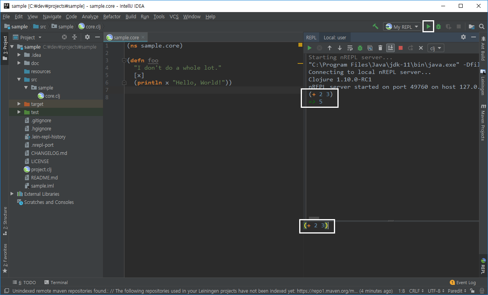

-
IntelliJ에 Cursive 플러그인을 추가하면 소스 브라우징, 리팩토링, 디버깅 등을 디폴트로 이용할 수 있어 편리하다.
-
Cursive plugin에 대한 자세한 설명은 https://cursive-ide.com/userguide 페이지를 참조한다.
1. IntelliJ 설치
-
https://www.jetbrains.com/idea/download/에서 윈도우즈 버전의 Community Edition을 내려받아 설치한다.
2. Cursive 플러그인 추가
-
설치한 IntelliJ를 실행한다.
-
다음과 같은 화면이 나오면
[Configure — Plugins]을 선택한다. -
[Browse repositories…]버튼을 선택한 후, 다음 화면에서처럼 텍스트 입력상자에cursive라고 입력한 후install버튼을 눌러Cursive plugin설치를 마친다. -
IntelliJ를 재실행한다.
3. Project 열기
-
Intellij를 재실행해서 다음과 같은 화면이 나오면,
Import project를 선택한다. -
그후에 앞에서 미리 만들어 두었던
C:\dev\projects\sample\project.clj파일을 선택한 후,OK버튼을 눌러 진행한다. -
계속해서
Next버튼을 눌러 나가다가, 다음과 같은Please select project JDK창을 만나면 바로 아래+버튼을 눌러 준 후,JDK를 선택하고Next버튼을 눌러 준다. -
그후에 JDK가 default로 설치된
C:\Program Files\Java\JDK-11경로를 다음과 같이 선택해 준 후,OK버튼을 누른다. 이후 계속해서Next버튼을 눌러 프로젝트 열기를 마친다.
4. REPL 등록하기
Cursive에서는 REPL을 따로 등록해 주어야 한다.
-
[
Run — Edit configurations…] 메뉴를 선택하면 다음과 같은 화면이 나온다. 이때 [+ -- Clojure REPL -- Local]을 선택한 후,OK버튼을 눌러 준다. -
다음과 같은 화면이 나오면,
Name란에 자신이 원하는 REPL 이름을 입력한 후OK버튼을 누른다. 여기서는 편의상My REPL로 명명하기로 한다.
5. Cursive REPL 실행 예
5.1. REPL 구동하기
-
다음 화면의 우측 상단의
우측 화살표모양을 클릭하면 REPL이 구동된다. -
REPL의 구동이 끝난 후, 우측 하단의 창에
(+ 2 3)코드를 입력하고Shift-<Enter>키를 누르면, 그 실행 결과가 우측 중앙의 REPL 창에 나타난다.
5.2. namespace 전환하기
-
core.clj편집창에 커서를 위치 시킨 후,Alt-Shift-r키를 눌러 주면 REPL내의 namespace를 변경할 수 있다. REPL 창에(in-ns 'sample.core)코드가 실행된 결과, 우측 상단에Local sample.core가 표시되어 namespace가 전환되었다는 사실을 확인할 수 있다.
5.3. 파일 전체 평가하기
-
core.clj편집창에 커서를 위치 시킨 후,Alt-Shift-l키를 눌러 주면,core.clj파일 전체가 평가된다. 그 사실이REPL창에 표시되어 있다.
5.4. REPL 창에서 코드 실행하기
-
이제 우측 하단의 창에서
(foo "Clojure")코드를 입력한 후Shift-<Enter>키를 누르면, 그 결과가 우측 중앙의 REPL 창에 보인다.
5.5. 편집창에서 코드 실행하기
-
core.clj편집창에 커서를 위치시킨 후, 아래와 같이(+ 10 20)코드를 입력해 보자. 닫는 괄호 뒤에 커서를 위치 시킨 후,Alt-Shift-p키를 누르면, 그 실행 결과가REPL창에 다음과 같이 표시된다